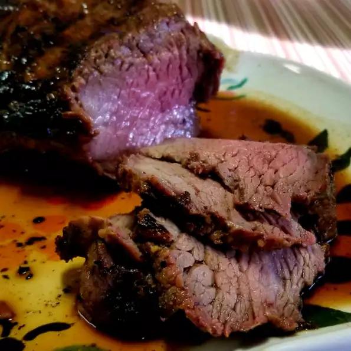

Home Page
Grilled Tri-Tip

This grilled tri-tip recipe with a tasty dry rub tastes gourmet but is actually
very easy to make. It's a perfect dinner for guests. It is sure to impress!
Ingredients
- 4 pounds tri-tip roast
- 5 gloves garlic, peeled and very thinly sliced
- 1/3 cup salt
- 1/3 cup black pepper
- 1/3 garlic salt
Directions
- Using a sharp knife, cut small slits in the top of the roast; insert garlic
slices into the slits.
- Mix salt, pepper, and garlic salt together in a small bowl; rub all over the tri-tip
and refrigerate for at least 1 hour or up to 1 day. Remove tri-tip from the refrigerator
about 20 minutes before grilling.
- Preheat an outdoor grill for high heat and lightly oil the grate.
- Place the meat directly above the flame to sear the meat and lock in the juices, about
5 to 10 minutes per side.
- Turn the grill down to medium heat and continue to cook, turning occasionally, for
another 25 to 30 minutes. An instant-read thermometer inserted into the center
should read 145 degrees F (63 degrees C) for medium-rare. Let stand, covered loosely
with aluminum foil, for 5 minutes before slicing.